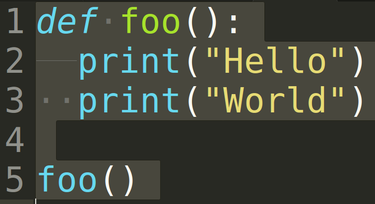
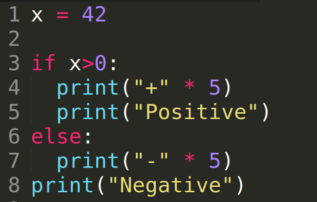

Getting started with Python
Created for
Created by
2019,

Python Overview
Python Overview

picture source: @imgur.com
from If programming languages were essays...
{kind=link}
History
- Creator: Guido van Rossum
- Named after Monty Python's Flying Circus comedy show.
- Python 1.0 - January 1994
- Python 2.0 - October 2000
- Python 3.0 - December 2008
Python 2 will not be maintained past 2020
What's the use of Python?
- Python is a general-purpose programming language, used for:
- System administration (incl. cloud)
- Embedded devices (incl. Raspberry Pi, Arduino, ...)
- Web and Internet Development
- Mobile apps development
- Data Science, Big Data, Machine Learning
- Scientific computing
- Education
Python implementations/distributions
Python is an open source project: Python's github
- CPython - the official Python distribution.
- PyPy - faster and compliant with Python2 and Python 3
- Jython - Python for the Java Platform.
- IronPython - the Python programming language for the .NET Framework.
- Pyjs - contains a Python-to-JavaScript compiler, an AJAX framework and more.
What's in a program
What's in a program
| Bulgarian | Python | |
|---|---|---|
| novel | <=> | program |
| paragraph | <=> | block |
| sentences | <=> | instructions |
| types of sentences (declarative, imperative,...) | <=> | types of instructions (statements, expressions) |
| grammar rules (can be ambiguous) | <=> | grammar rules (could not be ambiguous) |
What's in a Python program
- A program consists of set of instructions, which are executed by the computer.
- In Python, we write each instruction on a new line.
- Instructions which performs one task are separated as a
block. - In Python the block is not separated by braces, as in other programming languages, but by same indentation of the instructions in it.
Python design philosophy and syntax
Python design philosophy and syntax
The Zen of Python
$ python -m this
The Zen of Python, by Tim Peters
Beautiful is better than ugly.
Explicit is better than implicit.
Simple is better than complex.
Complex is better than complicated.
Flat is better than nested.
Sparse is better than dense.
Readability counts.
Special cases aren't special enough to break the rules.
Although practicality beats purity.
Errors should never pass silently.
Unless explicitly silenced.
In the face of ambiguity, refuse the temptation to guess.
There should be one-- and preferably only one --obvious way to do it.
Although that way may not be obvious at first unless you're Dutch.
Now is better than never.
Although never is often better than *right* now.
If the implementation is hard to explain, it's a bad idea.
If the implementation is easy to explain, it may be a good idea.
Namespaces are one honking great idea -- let's do more of those!
Or just read it here: The Zen of Python
Clean syntax
- Statements are terminated by EOL, not by semicolons!
- Though, you can use semicolons if you wish
- Block of statements is wrapped by the same indentation, not by curly braces
- You can use spaces or tabs for indent.
- Mixing spaces with tabs can lead to errors or bugs.
Do not mix space and tabs
{kind=link}
That code will lead to
TabError: inconsistent use of tabs and spaces in indentation
Same indent!

That code will lead to
IndentationError: unexpected indent
Wrong indentation can cause bugs!
{kind=link}
Can you spot the bug?
Write your first Python program in Jupyter.
Write your first Python program in Jupyter.
Folder structure
- Create a folder named
Notebooksinto your main course folder
PJ_Course
├── lab1
│ ├── ...
├── Notebooks
Prepare the virtual environment
- Remove any virtual environments you have created in past lab:
# go to lab1 folder:
cd some/path/PJ_Course/lab1
# remove virtual env:
pipenv --rm
# remove Pipfile && Pipfile.lock
rm Pipfile Pipfile.lock
Prepare the virtual environment
- During the course, we'll use one virtual environment for all labs examples
- It will be created in PJ_Course/ main folder
# go to PJ_Course folder (if you are in lab1/):
cd ../
# or if you are in new terminal, do:
cd some/path/PJ_Course/
# create a virtual environment with Python3:
pipenv --three
# install the modules:
pipenv install pandas matplotlib jupyterlab
Start the Jupyter Notebook Server
# activate the virtual environment:
pipenv shell
# start the server
jupyter notebook
If you close that Terminal - you'll stop the Jupyter Notebook server, so make sure you leave it alone.
- Live Demo
- The code will be uploaded in: ProgressBG-PythonAndJupyter-Labs GitHub repo
These slides are based on
customised version of
framework